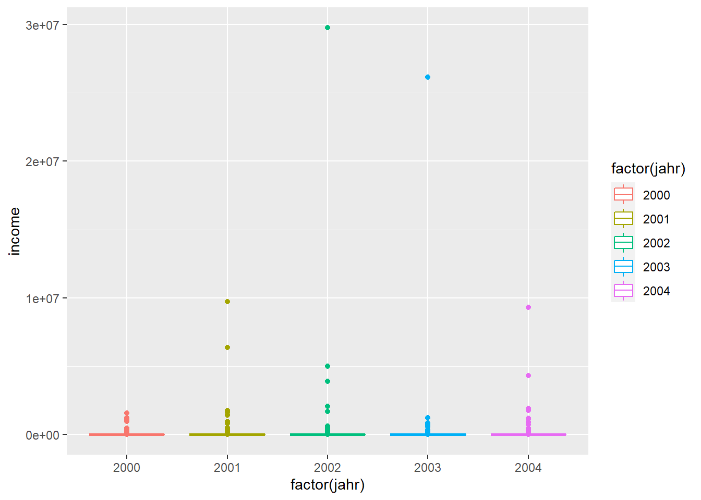
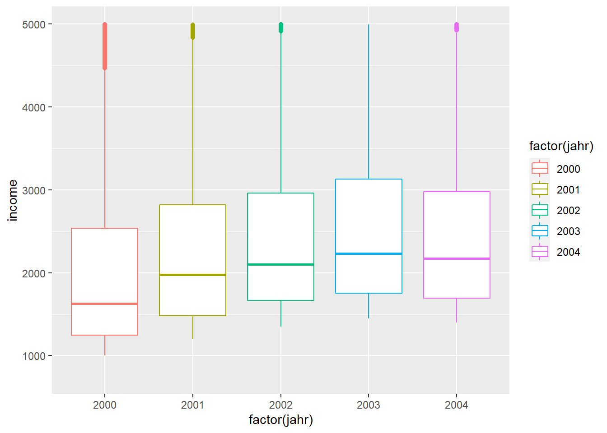
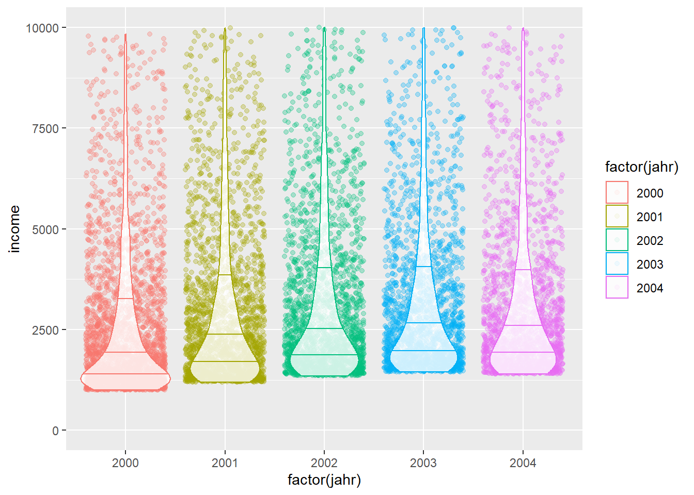

Mikrodatenanalyse in R
Ziele der Sitzung
- Setup eines effizienten Workflows für die Analyse von großen (Mikro-)Datensätzen
- Mergen aus verschiedenen Datensätzen
- Erstellen eines Arbeitsdatensatzes
- Deskriptive Statistiken (numerisch und grafisch)
- Gewichtete Statistiken
Setup eines effizienten Workflows
Grundidee
Mikrodatensätze wirken häufig komplex. Grund hierfür sind sicherlich die Dimensionen der Datensätze. Viele Beobachtungen (Zeilen!) treffen auf viele Variablen (Spalten!)
Bei der Datenanalyse unterscheiden sich die Workflows in der Grundstruktur kaum von der Analyse anderer kleinerer Datensätze:
- Daten einlesen
- Daten säubern
- Daten analysieren
- Daten transformieren
- Daten visualisieren
- Daten kommunizieren
Quelle: Vgl. R4DS
In der Praxis geht es meist nicht so geradlinig zu. Insbesondere bei großen Datensätzen kann es sinnvol sein, einige Zwischenschritte einzubauen.
Bei der Arbeit mit Mikrodatensätzen müssen in der Regel verschiedene Datensätze zu einem Arbeitsdatensatz zusammengeführt werden.
Das Zusammenführen der Daten kann, je nach Größe der Datensätze einige Zeit in Anspruch nehmen. Um zu Vermeiden, den Arbeitsdatensatz ständig auf’s Neue zusammenzufügen, sollte ein Arbeitsdatensatz gespeichert werden.
An diesem sollten, außer dem Zusammenführen der Daten, noch keine Änderungen vergenommen worden sein. Das Verändern der Daten erfolgt erst in einem späteren Schritt. Geht im Verlaufe der Datenanalyse etwas schief und der Arbeitsdatensatz wird ausversehen überschrieben, kann schnell die Erstversion wiederhergestellt werden. Ein erneutes Zusammenstellen der Daten wird vermieden.
Ein effizienter Workflow bei der Analyse großer Datenmengen aus verschiedenen Quellen könnte also so aussehen:
Quelle: Adaptiert von R4DS
Ordnerstruktur
Ein effizienter Workflow beginnt bei einer effizienten Ordnerstruktur. Dabei sollte mir R-Projekten gearbeitet werden. Eine beispielhafte Ordnerstruktur könnte so aussehen:
## Beispielordner_Mikrodatenanalyse
## +-- 01_Daten.R
## +-- 02_Analyse.R
## +-- data_in
## | +-- phealth.dta
## | +-- pl.sav
## | \-- ppathl.dta
## \-- Projekt_Mikrodatenanalyse.RprojDer Projektordner Beispielordner_Mikrodatenanalyse enthält alle relevanten Dateien. In der ersten Ebene liegt die .Rproj-Datei (Projekt_Mikrodatenanalyse.Rproj), .R-Dateien und Unterordner.
Ausgehend vom Projektordner, in dem die .Rproj-Datei liegt, können beliebige Unterordner gebildet werden. Alternativ zur obigen Struktur könnten die .R-Dateien auch in einen eigenen Ordner verschoben werden.
Andere Beispiele für Ordnerstrukturen finden sich zum Beispiel hier:
Mikrodatenanalyse Praxisbeispiel
Daten einlesen
Problem:
Mikrodaten werden in der Regel (noch) nicht in einem R-Datenformat ausgeliefert. Häufig sind zunächst nur dta-Dateien (Stata) oder sav-Dateien (SPSS) verfügbar.
###Lösung:
Das Paket haven ermöglicht das Einlesen fremder Dateitypen.
Das Paket bietet verschiedene Funktionen, um fremde Dateiformate einzulesen, und diese zu speichern. Stata oder SPSS-Nutzer sind zudem die Arbeit mit Labeln gewohnt. In R wird dies standardmäßig nicht unterstützt. haven enthält verschiedene Funktionen, um Label zu definieren, ändern, löschen, usw.:
## [1] "as_factor" "format_tagged_na"
## [3] "is.labelled" "is_tagged_na"
## [5] "labelled" "labelled_spss"
## [7] "na_tag" "print_labels"
## [9] "print_tagged_na" "read_dta"
## [11] "read_por" "read_sas"
## [13] "read_sav" "read_spss"
## [15] "read_stata" "read_xpt"
## [17] "tagged_na" "vec_arith.haven_labelled"
## [19] "write_dta" "write_sas"
## [21] "write_sav" "write_xpt"
## [23] "zap_empty" "zap_formats"
## [25] "zap_label" "zap_labels"
## [27] "zap_missing" "zap_widths"Bei der Arbeit mit Mikrodatensätzen liegt die erste Hürde im Zusammentragen der Datensätze. Beispielhaft soll dies anhand dreier Datensätze demonstriert werden. Die Datensätze basieren auf dem frei zugänglichen SOEP-Übungsdatensatz. Dieser wurde um weitere Variablen ergänzt und für einen realistischeren Anwendungsfall aufgesplittet. Die Variablen sind verfremdet, beziehungsweise auf Zufallsbasis erstellt.
Für unsere Mikrodatenanalyse nutzen wir drei Datensätze: ppathl.dta, pl.sav, phealth.dta. Wir lesen diese mit den Befehlen read_dta() beziehungsweise read_sav() aus dem Paket haven ein.
ppathl <- read_dta("Beispielordner_Mikrodatenanalyse/data_in/ppathl.dta")
pl <- read_sav("Beispielordner_Mikrodatenanalyse/data_in/pl.sav")
phealth <- read_dta("Beispielordner_Mikrodatenanalyse/data_in/phealth.dta")Wie immer sollten die Datensätze zunächst inspiziert werden:
## # A tibble: 12,922 x 4
## persnr jahr sex weight
## <dbl> <dbl> <dbl+lbl> <dbl>
## 1 500575 2001 1 [weiblich] 467.
## 2 279067 2003 1 [weiblich] 860.
## 3 238927 2004 0 [maenlich] 343.
## 4 240595 2004 0 [maenlich] 869.
## 5 88977 2003 1 [weiblich] 367.
## 6 254006 2001 0 [maenlich] 314.
## 7 344281 2003 1 [weiblich] 892.
## 8 666151 2002 0 [maenlich] 908.
## 9 383792 2001 0 [maenlich] 793.
## 10 482355 2002 1 [weiblich] 648.
## # ... with 12,912 more rows## # A tibble: 12,922 x 7
## persnr jahr bildung anz_kind income bula region
## <dbl> <dbl> <dbl> <dbl> <dbl> <dbl> <chr>
## 1 294354 2001 10.5 0 2947. 11 Land
## 2 414129 2001 12 0 9771. 4 Stadt
## 3 417490 2002 10.5 2 1419. 2 Land
## 4 334726 2000 9 0 1276. 14 Stadt
## 5 569347 2001 11 2 8456. 15 Stadt
## 6 471291 2003 18 0 5380. 11 Land
## 7 663550 2004 11 0 2540. 15 Stadt
## 8 587268 2001 NA 0 3940. 6 Stadt
## 9 75033 2000 13 1 1927. 13 Stadt
## 10 180832 2003 12 0 1568. 13 Land
## # ... with 12,912 more rows## # A tibble: 12,276 x 6
## persnr jahr gesund_org gesund_std lebensz_org lebensz_std
## <dbl> <dbl> <dbl+lbl> <dbl> <dbl+lbl> <dbl>
## 1 235585 2000 4 [Gut] 0.567 5 [5 Zufrieden: Skala 0~ -1.23
## 2 74141 2000 3 [Zufriedenst~ -0.464 6 [6 Zufrieden: Skala 0~ -0.659
## 3 512655 2001 4 [Gut] 0.567 6 [6 Zufrieden: Skala 0~ -0.659
## 4 259440 2003 3 [Zufriedenst~ -0.464 8 [8 Zufrieden: Skala 0~ 0.477
## 5 527534 2002 4 [Gut] 0.567 9 [9 Zufrieden: Skala 0~ 1.05
## 6 510444 2001 1 [Schlecht] -2.53 5 [5 Zufrieden: Skala 0~ -1.23
## 7 396886 2001 2 [Weniger_gut] -1.49 6 [6 Zufrieden: Skala 0~ -0.659
## 8 246747 2002 5 [Sehr_gut] 1.60 10 [10 Zufrieden: Skala ~ 1.61
## 9 544752 2001 4 [Gut] 0.567 6 [6 Zufrieden: Skala 0~ -0.659
## 10 152915 2000 5 [Sehr_gut] 1.60 7 [7 Zufrieden: Skala 0~ -0.0909
## # ... with 12,266 more rowsEin Teil der Variablen ist vom Typ haven_labelled, angezeigt durch <dbl+lbl>. Für Statanutzer ist dies nichts Neues. Dies bedeutet lediglich, dass die Variablen neben dem eigentlichen Variablennamen noch eine Kurzbeschreibung tragen. <dbl+lbl> zeigt an, dass die Variable numerisch ist (<+lbl>.
Um die drei Datensätze zusammenzufügen nutzen wir die beiden Matching-Variablen persnr und jahr.
Optional: Standardmäßig zeigt R keine Änderungen an Datensätzen in der Konsole an. Wer gerne Feedback für Datenmanipulationen und auch Mergevorgänge möchte, der kann hierfür das Paket tidylog nutzen. Das Paket bietet Informationen für eine Vielzahl an Datenmanipulationsfunktionen aus dem tidyverse.
## [1] "add_count" "add_tally" "anti_join" "count"
## [5] "distinct" "distinct_all" "distinct_at" "distinct_if"
## [9] "drop_na" "fill" "filter" "filter_all"
## [13] "filter_at" "filter_if" "full_join" "gather"
## [17] "group_by" "group_by_all" "group_by_at" "group_by_if"
## [21] "inner_join" "left_join" "mutate" "mutate_all"
## [25] "mutate_at" "mutate_if" "pivot_longer" "pivot_wider"
## [29] "relocate" "rename" "rename_all" "rename_at"
## [33] "rename_if" "rename_with" "replace_na" "right_join"
## [37] "sample_frac" "sample_n" "select" "select_all"
## [41] "select_at" "select_if" "semi_join" "slice"
## [45] "slice_head" "slice_max" "slice_min" "slice_sample"
## [49] "slice_tail" "spread" "summarise" "summarise_all"
## [53] "summarise_at" "summarise_if" "summarize" "summarize_all"
## [57] "summarize_at" "summarize_if" "tally" "tidylog"
## [61] "top_frac" "top_n" "transmute" "transmute_all"
## [65] "transmute_at" "transmute_if" "uncount" "ungroup"Datensätze zusammenführen
Um Datensätze zusammenzuführen werden die Mutating Joins-Funktionen genutzt. Die vier Funktionen aus dem Paket dplyr welches Teil des tidyverse ist, sind:
Neuer_Datensatz <- left_join(Datensatz1, Datensatz2, by = c(“Matchingvariable1”, “Matchingvariable2”)): Datensatz1 bleibt komplett erhalten und wird um Spalten von Datensatz2 ergänzt.Neuer_Datensatz <- right_join(Datensatz1, Datensatz2, by = c(“Matchingvariable1”, “Matchingvariable2”)): Datensatz2 bleibt komplett erhalten und wird um Spalten von Datensatz1 ergänzt.Neuer_Datensatz <- inner_join(Datensatz1, Datensatz2, by = c(“Matchingvariable1”, “Matchingvariable2”)): Nur die Beobachtungen behalten, bei denen dieselben Matchingvariablen in beiden Datensätzen auftauchen.Neuer_Datensatz <- full_join(Datensatz1, Datensatz2, by = c(“Matchingvariable1”, “Matchingvariable2”)): Neuer Datensatz enthält sowohl Beobachtungen, die in beiden Datensätzen vorkommen als auch Einzelbeobachtungen, die nicht gematcht wurden.
Quelle: Data Wrangling Cheat Sheet
##Reihenfolge des Zusammenfügens bei Mikrodatensätzen
Bei der Arbeit mit Mikrodatensätzen beginnt man in der Regel mit einem Basisdatensatz, in unserem Fall ppathl. Dieser enthält in der Regel alle Beobachtungen. Aufbauend auf diesem Datensatz werden weitere Informationen hinzugefügt. Wir wissen also, dass wir an ppathl alle anderen Datensätze dranspielen können. In unserem finalen Datensatz sind alle Zeilen aus ppathl enthalten, ergänzt um weitere Variablen aus den anderen Datensätzen. Wir nutzen also den left_join.
Um einen Arbeitsdatensatz aus mehreren Datensätzen zu erstellen, kann man schrittweise vorgehen:
#2. Schritt
arbeitsdatensatz_mit_zwischenschritt <- left_join(zwischendatensatz1, phealth, by = c("persnr", "jahr"))Wer sich sicher fühlt nutzt den Pipe-Befehl und kombiniert die beiden Schritte.
library(tidyverse)
arbeitsdatensatz <- ppathl %>% #Ausgangsdatensatz ppathl
left_join(pl, by = c("persnr", "jahr")) %>% #1. Schritt
left_join(phealth, by = c("persnr", "jahr")) #2. SchrittDas Ergebnis ist identisch:
## v No differencesAn dieser Stelle bietet es sich an, den Arbeitsdatensatz oder vielleicht sogar alle bisher geladenen und erstellten Objekte (z.B. Datensätze) abzuspeichern. Mit saveRDS kann ein einzelnes R-Objekt gespeichert werden. readRDS lädt dieses ein.
# Einzelnes Objekt speichern:
saveRDS(object = arbeitsdatensatz, file = "arbeitsdatensatz.rds")
# Einzelnes Objekt laden:
arbeitsdatensatz <- readRDS("arbeitsdatensatz.rds")Sollen alle bisher erstellten Obejekte gespeichert werden, geschieht dies mit save.image. Geladen wird mit dem Befehl load.
##Analyse von Mikrodaten
Die große Anzahl an Beobachtungen kann die (effiziente) Visualisierung von Mikrodaten erschweren und einige Visualisierungsformen bieten sich mehr an als andere. Entscheidend ist der Datentyp, der visualisiert werden soll.
Sollen lediglich aggregierte Werte, wie beispielsweise Mittelwerte, Quantile und Dispersionsmaße dargestellt werden, unterscheidet sich die Datenvisualisierung von Mikrodaten nicht von der von anderen Daten. Lediglich bei der Datenanalyse muss auf die Gewichtung der Daten geachtet werden.
###Gewichte (Hochrechnungsfaktoren) Um für die Grundgesamtheit repräsentative Ergebnisse zu erhalten, müssen die Daten aus der Stichprobe gewichtet werden. Wie immer kann ein gewünschtes Ergebnis, hier zum Beispiel die durchschnittlichen Einkommen im Jahr 2004, händisch berechnet werden.
arbeitsdatensatz %>%
filter(jahr == 2004) %>%
summarise(income_mean_weighted = sum(income*weight)/sum(weight)) ## # A tibble: 1 x 1
## income_mean_weighted
## <dbl>
## 1 21521.In der Regel hat sich jedoch schon jemand die Mühe gemacht und eine Funktion geschrieben:
arbeitsdatensatz %>%
filter(jahr == 2004) %>%
summarise(income_mean_weighted = weighted.mean(x = income, w = weight))## # A tibble: 1 x 1
## income_mean_weighted
## <dbl>
## 1 21521.So bietet zum Beispiel das Paket spatstat Funktionen, die für die Berechnung deskriptiver, gewichteter Statistiken sinnvoll sind.
library(spatstat)
ls("package:spatstat") %>%
as_tibble() %>%
filter(stringr::str_detect(value, "weighted"))## # A tibble: 4 x 1
## value
## <chr>
## 1 weighted.median
## 2 weighted.quantile
## 3 weighted.var
## 4 weightedclosepairsDie Anwendung dieser Funktionen funktioniert genau wie in unseren bisherigen Beispielen. Sind wir an der Entwicklung des gewichteten Medianeinkommens über die Zeit interessiert, bestimmen wir diese mit:
arbeitsdatensatz %>%
group_by(jahr) %>%
summarise(income_weighted_median = spatstat::weighted.median(income, weight, na.rm = T)) %>%
ungroup()## # A tibble: 5 x 2
## jahr income_weighted_median
## <dbl> <dbl>
## 1 2000 1971.
## 2 2001 2477.
## 3 2002 2651.
## 4 2003 2838.
## 5 2004 2790.Als Visualisierung:
arbeitsdatensatz %>%
group_by(jahr) %>%
summarise(income_weighted_median = spatstat::weighted.median(income, weight, na.rm = T)) %>%
ggplot(aes(x = factor(jahr), y = income_weighted_median, group = 1)) +
geom_line(linetype = "dashed") +
geom_point(aes(color = factor(jahr)), size = 5) Insbesondere bei Daten mit vielen Beobachtungen kann es spannend sein, die Verteilung der Variblen von Interesse zu visualisieren. Ein Klassiker ist der Boxplot.
arbeitsdatensatz %>%
ggplot(aes(x = factor(jahr), y = lebensz_org, color = factor(jahr), weight = weight)) +
geom_boxplot()
Der klassiche Boxplot gibt zwar einige Hinweise auf die Verteilung der Daten, es geht aber auch schicker. Zum Beispiel mit geom_jitter.
arbeitsdatensatz %>%
ggplot(aes(x = factor(jahr), y = lebensz_org, color = factor(jahr), weight = weight)) +
geom_jitter(alpha = 0.3) +
geom_boxplot(alpha = 0.8, outlier.color = NA)
Oder mit geom_violin:
arbeitsdatensatz %>%
ggplot(aes(x = factor(jahr), y = income, color = factor(jahr), weight = weight)) +
geom_jitter(alpha = 0.3) +
geom_violin(alpha = 0.8, draw_quantiles = c(0.25, 0.5, 0.75)) +
ylim(1000, 10000)
Eine weitere Option zur Visualisierung von Verteilungen ist geom_density.
arbeitsdatensatz %>%
filter(jahr == 2000) %>%
ggplot() +
geom_density(aes(x = income, weight = weight)) + #auch hier erlaubt weight eine Ausgabe gewichteter Graphen
geom_density(aes(x = income), color = "red") + #zum Vergleich der ungewichtete Graph
xlim(0,20000)